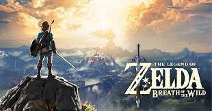

The Legend of Zelda: Breath of the Wild es un videojuego de acción-aventura de 2017 de la serie The Legend of Zelda, desarrollado por la filial Nintendo EPD en colaboración con Monolith Soft y publicado por Nintendo para las consolas Wii U y Nintendo Switch.Es la décimo octava entrega de la serie. Se lanzó el 3 de marzo de 2017. El jugador controla a Link, que despierta en un mundo postapocalíptico después de estar cien años durmiendo para derrotar a Ganon y salvar al reino de Hyrule. A diferencia de los otros títulos predecesores de la serie, el juego presenta un mundo abierto que le permite al jugador encontrar distintas maneras de completar un objetivo y que la historia pueda ser completada de forma no lineal.
 Página Nintendo Switch